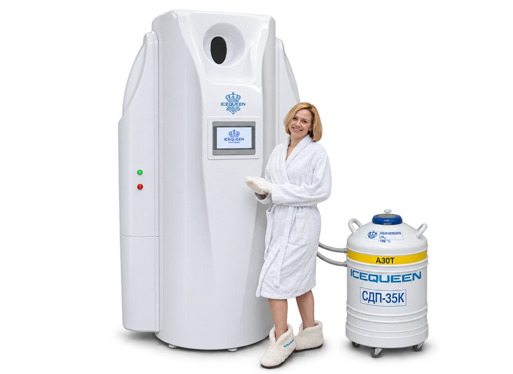

Общая криотерапия

Стоимость
- Сеанс2 минуты
- 3 500 ₽
- Продолжительность сеанса
- 2 минуты
- Температура воздействия
- −120…−130 °C
- Метод охлаждения
- Азотная криотерапияОхлаждённая смесь паров азота и воздуха
- Медицинский контроль
- Под наблюдением врачаВозможность досрочного завершения сеанса
Суть метода
Моржевание и холодные купели — давние традиции, знакомые многим. Чтобы попробовать зимнее купание, нужно найти место, выделить время на дорогу и решиться на погружение в ледяную воду. В нашей клинике мы предлагаем более доступный формат прямо на курорте. Капсула ICEQUEEN поддерживает заданную температуру, а интенсивный сухой холод воздействует на поверхность тела всего две минуты. Врач на месте оценивает, подходит ли вам процедура, и наблюдает за вами весь сеанс. Вы остаётесь сухими, а возможность остановить сеанс по вашему сигналу помогает спокойнее решиться на первое знакомство с холодом.
Для чего применяется
Внутри криокапсулы распыляется холодная смесь азота и воздуха. В отличие от открытых криосаун и криобочек, ICEQUEEN обеспечивает равномерное охлаждение 95–98 % поверхности кожи, включая область головы. Конструкция капсулы позволяет вам дышать воздухом помещения, пока внутри камеры циркулирует азотная смесь. Капсула может работать при температуре от −120 до −160 °C. В нашей криокапсуле по умолчанию установлен режим от −120 до −130 °C.
Рецепторы кожи (нервные окончания, чувствительные к температуре) передают сигнал о резком охлаждении в мозг. Организм регулирует потерю тепла: сосуды кожи сначала сужаются, а по мере согревания расширяются и кровоток восстанавливается. На холод также реагирует нервная система, которая регулирует сердечный ритм и чувствительность к боли. В восстановительных программах мы используем этот ответ, чтобы временно уменьшить боль и скованность и облегчить движение.
Современная общая криотерапия появилась в Японии в конце 1970-х годов. Врач Тосиро Ямаути применял её, чтобы облегчить боль при ревматоидном артрите (хроническом воспалительном заболевании суставов). Среди возможных механизмов обезболивания изучают роль эндорфинов (веществ, которые организм вырабатывает для регуляции боли).
Как проходит сеанс
Жидкий азот поступает из резервуара в систему охлаждения ICEQUEEN. Теплообменник (устройство для передачи тепла) и компрессор формируют поток холодной смеси азота и воздуха. Во время сеанса вы стоите в капсуле и сохраняете визуальный контакт со специалистом. Он жестом показывает начало, затем отмечает, что осталось полторы минуты, минута и 30 секунд, и даёт знак об окончании. Если вам некомфортно или вы хотите выйти, подайте условный сигнал, который специалист покажет перед началом. Он остановит сеанс.
Подготовка
Всё необходимое уже ждёт вас в клинике: одноразовое бельё, носки и варежки. Если перед сеансом вы были в сауне, бане, душе или на другой водной процедуре, дождитесь, пока кожа и волосы полностью высохнут. Если на день назначено несколько процедур, криотерапию по возможности ставят последней.
Показания
Мы применяем общую криотерапию как часть программы восстановления при боли и скованности, в том числе при некоторых заболеваниях суставов, и при мышечной болезненности после интенсивной нагрузки. В этих случаях задача процедуры — облегчить боль и помочь вам сохранить привычную подвижность. Кратковременное охлаждение меняет микроциркуляцию (кровоток в мелких сосудах кожи). После интенсивных тренировок исследователи также наблюдали изменения отдельных показателей воспалительной реакции. Если ваша цель — сохранять активность с возрастом, врач подберёт программу с учётом вашего состояния и определит, есть ли в ней место криотерапии.
Противопоказания
Процедуру откладывают при острой инфекции, повышенной температуре, плохом самочувствии и во время беременности. Холодовая крапивница (зудящие волдыри или отёк после воздействия холода) — противопоказание.
До записи сообщите врачу, если у вас есть неконтролируемое высокое давление, серьёзное заболевание сердца или сосудов, недавно перенесённый инфаркт или инсульт, эпилепсия или судороги, тромбоз (сгусток крови в сосуде), открытые раны или выраженный страх замкнутых пространств. Решение о допуске принимает медицинский специалист.